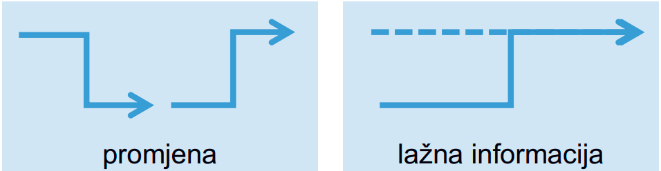

Postoje li neki stari materijali?
Kasperinac Na studoši githubu imaš predmet sigurnost u internetu. Na prvom predavanju su rekli da je na FER2 programu to bio predmet koji je sadržavao gradivo iz sigkoma, samo da su sad razdijelili taj predmet na dosta drugih predmeta, pa ima novog gradiva i maknuli su staro. Tako da možda uspiješ nać nešto relevantno na: https://github.com/studosi-fer/SUI
Iz kojeg predmeta mozemo trazit stare ispite s ocekivanjem da bi moglo bit slicno, jel taj srs zavrsni preklapa nase gradivo ili
koja je razlika između ovog lol

NISAM ASISTENT promjena- modifikacija originalne informacije, lažna informacija - uopće se ne koristi originalna, nego se stvori nova (lažna) informacija.
je li nas ispituju srs slajdove na prezentacijama? treba li to uciti?
Jel ima itko ideju koje gradivo je bitnije za znat (nadam se ne sve)? Jer na prezentacijama ima hrpa sitnica pa gledam šta od tog treba pamtit.
Jaster111 kolega, nećete mi vjerovati ako vam kažem…
Jaster111 Vodeći se onim kak je srs izgledo, vjerojatno je najpametnije naučiti svo gradivo vezano uz lab. vježbe
Jel potencijalno netko gradi kakvu skriptu za ovo? Da se otvori mozda google docs.
Jaster111
Probao sam sažeti lekcije iz drugog ciklusa što više moguće u jedan docs. Ako netko ima kakvih informacija što bi valjalo ubaciti i/ili izmijeniti, javite.
https://docs.google.com/document/d/1shaCT9zJgR16VtGgX2wJYZoove5nVmbWWwhvU1Q2y6M/edit?usp=sharing
Jaster111 dosta pitanja na MI-u su bila vezana uz labose. Možda bi bilo dobro da se dodaju neke informacije o labosima tipa što određene firewall komande rade, ili kako oni scanovi funkcioniraju i njihove zastavice.
Jaster111 ima netko ovak neki sažetak 1.ciklusa?
branimir1999 otvorio sam dokument upravo da svi mogu tipkat, pa ako se tebi ili nekome da nakucat neko poglavlje o labosima, bilo bi izvrsno jer ja bas labose i nisam znao nešto pretjerano.
Postoji li neka dobra duša koja ima nešto sažeto o labosima da pošalje? 🙏🏼
Stare skriptice koje dobro posluze za 1. ciklus: https://github.com/studosi-fer/SUI/blob/master/ispiti/mi/SUI_Sazetak_-_1._MI_2011-12.pdf https://github.com/studosi-fer/SUI/blob/master/ispiti/zi/SUI_Sazetak_-_Zavrsni_ispit_2015-16.pdf
Ekipa kak izvjezbat ove IP tables, ima di starih ispita iz mrežne sigurnosti ili SRSa il tak nesto ?
𝐓𝐇𝐄 𝐒𝐄𝐂𝐑𝐄𝐓 - 𝐂𝐋𝐔𝐁 imam feeling da ce stavit samo jednostavna pravila jer 90% ljudi to ne razumije i krivo je rijesilo labos